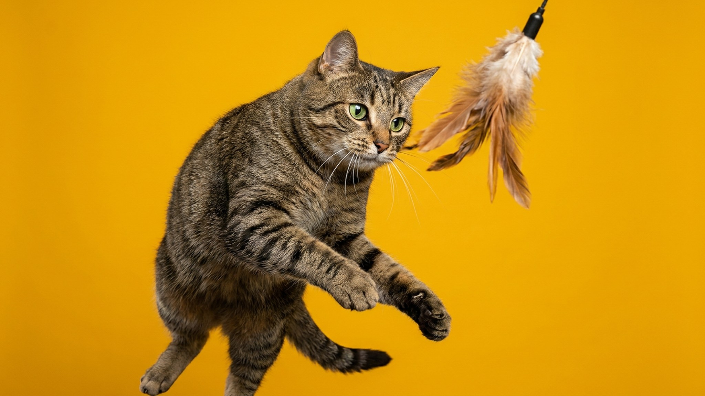

Вы набираете ванну — а кошка уже сидит на бортике и трогает лапой воду, будто примеряется. Для эгейской кошки это норма: её предки веками жили на греческих рыбацких причалах и охотились у самой кромки моря. От этого прошлого ей достались любовь к воде, звонкий разговорчивый нрав и привязанность к человеку почти как у собаки. Разбираем, каково жить с этой породой и что ей нужно для счастья.
🐾 Ваш питомец — эгейская кошка?
Заведите профиль в AnimaLife: приложение запомнит породу, возраст и вес и будет подсказывать по уходу именно для неё. Вопросы AI-ветеринару — круглосуточно и бесплатно.
Завести профиль → Завести в MAX →
У вас iPhone? AnimaLife есть в App Store
Эгейская кошка — одна из старейших естественных пород, сформировавшаяся без селекции на Кикладских островах Эгейского моря. Это некрупная (3–4,5 кг) кошка с полудлинной шерстью и почти всегда двух- или трёхцветным окрасом, где обязательно есть белый.
Главный плюс «природного» происхождения — крепкое здоровье. У породы нет накопленных наследственных болезней, характерных для многих выведенных линий. Это выносливая, живучая кошка с хорошим иммунитетом, если обеспечены нормальный уход и профилактические осмотры у ветеринара.
Эгейская кошка — не украшение полки, а полноценный участник семьи. Она общительна, любопытна и ходит за хозяином из комнаты в комнату, комментируя происходящее.
Рыбацкое прошлое оставило эгейской кошке редкую для кошачьих черту — она не боится воды, а нередко ею увлечена. Многие представители породы с удовольствием играют со струёй из крана, ловят лапой капли, а некоторые не прочь зайти в мелкую воду.
Используйте это: питьевой фонтанчик, игрушки с водой, безопасный доступ к капающему крану под присмотром сделают кошку счастливее и, к слову, помогут ей больше пить.
🐾 У вас эгейская кошка?
AnimaLife соберёт уход под породу: к каким болезням есть склонность, что проверять по возрасту, чем кормить и когда пора к врачу. Бесплатно, прямо в мессенджере.
Собрать план ухода → Собрать в MAX →
У вас iPhone? AnimaLife есть в App Store
🐾 Понравился разбор?
Подпишитесь на канал — каждый день разбираем по одному тревожному симптому у кошек и собак: что в пределах нормы, а когда пора к врачу. Подпишитесь, чтобы не пропустить разбор, который может спасти здоровье вашего питомца.
Полудлинная шерсть без плотного подшёрстка почти не путается — достаточно вычёсывать кошку раз в неделю, а в сезон линьки чаще. Купать специально не нужно: если кошка сама лезет в воду, это её игра, а не гигиеническая процедура.
Главное для этой породы — не шерсть, а внимание. Дайте ей общение, игры, вертикальные полки и компанию — и получите преданного, здорового и жизнерадостного питомца, который будет встречать вас у двери. Плановые визиты к ветеринару и сбалансированный рацион закрывают почти все вопросы здоровья.